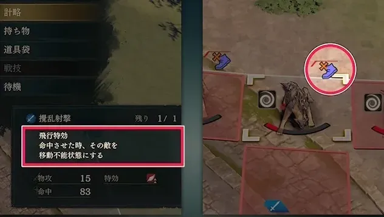
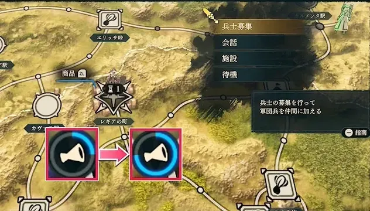

把军团编进队伍，让派兵支撑战备

查看大图 ↗先配给角色，战斗中才能下令
打开整备 → 军团兵配备，按角色需要选择能力加成与计略。军团兵不只配给女王，其他同伴也能使用。
出战后选择计略。攻击计略不会受到反击，适合安全削弱危险敌人；但使用次数有限，先看作用范围与目标再下令。
日文版游戏画面 · Game8 来源 ↗
查看大图 ↗多招一队兵，也能多一队人采集
第5章：探索地点可派军团兵采集，经过回合取得素材；派出期间不能拿同一队做其他事。回据点找波拿帕尔特，查看战备增援要交什么，再安排采集。
第6章：在城镇据点募集士兵，等待回合集结；应援演说可提高高阶军团出现机会。第8章的兵士大募集自带演说效果。
第7章：多余军团可交军兵输送长，积累兵备值换战术指南书。先保留常用计略和采集班底，再处理富余。
日文版游戏画面 · Game8 来源 ↗- 募集地图城镇 · 等待集结
- 派兵探索地点 · 收集素材
- 交付波拿帕尔特 · 战备收入
女王与重装守线，魔法和弓箭打开缺口
剧情与教学队友单独列出。箭头是培养方向，不要求练满每个职业；仍须满足进度、技能与考试条件。

赛奥朵拉
枪系前排／辅助治疗枪系前排与辅助潜力兼具；先确保稳定承伤。
留意 个人减伤有触发概率。扛伤计算按不触发减伤时也能存活来安排。
第三部再规划的转职
候选：圣枪师。 枪术 A；按游戏中的阶段开放和考试资格进行转职。
波拿帕尔特
魔法输出／邻接辅助魔法输出、回复与邻接辅助，补上女王的功能空缺。
培养重点
黑魔术作为主轴，保留已会的治疗；站在主力附近时可提供技巧辅助。 萨满巫师 → 先知方向，承担本线魔法伤害。
留意 辅助效果需要站位配合，仍要确保自己不被敌方集中攻击。
第三部再规划的转职
长期候选：德鲁伊。 黑魔术 A；属于第三部最上级职。
托比亚斯
物理重甲／战技重击高力量重甲可分担物理压力；与女王同属正面位，按战线需要投资。
培养重点
优先斧或枪中的一项与重装；用战技加攻补足单次伤害。 重装步兵 → 巨型重甲兵方向，和主角分担正面压力。
留意 速度慢，不以追击为前提；魔法敌人交给更合适的队友。
第三部再规划的转职
长期候选：要塞。 重装 C＋斧 A 或枪 A；按阶段开放考试。

莉利安
稳定弓手／反飞行稳定弓位提供远程与反飞行能力，队伍功能互补明显。
培养重点
优先弓术，在敌人不能反击时利用个人命中加成。 弓箭手 → 狙击手方向，关注武器威力和可靠命中。
留意 命中优势不等于伤害足够，击杀前仍需看战斗预览。
第三部再规划的转职
长期候选：宗师射手。 弓术 A；属于第三部最上级职。

莱桑达
第二个骑乘候选适合补机动侧翼；需要跑图和先攻时价值更明显。
培养重点
枪术与马术优先。骑甲驼兵准备枪术 C、马术 D，再向上级骑兵发展。
留意 本线第4章加入；先攻回避收益不能当作敌方回合稳定承伤，冲进敌群前仍要算撤退路线。
第三部再规划的转职
第三部：奥利哈铁骑，马术 B，另需枪术 A 或剑术 A。
先养眼前的主力，再为下一个缺口招人
本篇资源优先给谁
赛奥朵拉、波拿帕尔特和莉利安分别负责前排、魔法与远程。 索绯雅先保回复，莱桑达负责机动。想加近战输出，名声3看
索绯雅先保回复，莱桑达负责机动。想加近战输出，名声3看 诺克裘拉，名声4看能砍价到10G的
诺克裘拉，名声4看能砍价到10G的 札可捏；需要灵活剑手再看
札可捏；需要灵活剑手再看 洛蕾塔，不必把原有重装全部换掉。
洛蕾塔，不必把原有重装全部换掉。
更早决定兵种与技能
想长期培养的人，出现且条件达标后即可安排入队。实际入队等级越低，后续能由你选择兵种的升级次数通常越多。
门槛、时点、交涉要一起看
低名声不保证低等级，也不保证前几章就能遇见。金字塔列的是门槛，人物卡还会单列出现时间与附加条件。
提高名声既影响人物招募，也改善军团募集与派兵能力。先留够出战的军团兵，再把富余部队派去采集，避免开战时常用编配空缺。
按名声找人，按队伍缺口做选择
先看全线分层，再读名声3—6的培养卡。教学加入的同伴在上方介绍，不重复放入金字塔。
本线招募金字塔
每层列出从这一名声门槛开始可考虑的人物。升到更高名声后，低门槛人物仍可招募；还要满足支援、出现时间及交涉要求。
名声 3
1 位名声 4
1 位名声 5
4 位
名声 6
7 位


名声 7
6 位


名声 8
7 位


名声 9
9 位


名声 10
3 位

层级宽度只区分名声门槛，不表示战力或人数。★ 是本站按加入成本、培养时间及队伍缺口给出的建议，点击人物查看理由和完整条件。
名声 3—5 · 先准备这些人
诺克裘拉
低支援成本的格斗手名声 3 · 支援 1
已核对来源未列额外交涉物品；达到条件后对话确认。
支援只要 1，力量、速度和守备较均衡。想补近战格斗时，比再培养一名剑手更有分工。
培养重点
主练格斗，按当前考试界面经斗拳手、勇士推进；斧已练成时也可经土匪转勇士，不必两条都练。斗拳手精通的「攻击&远离」只在使用战技的战斗中提供回避+10。
留意 个人回避+3在战斗后才生效；Lv.35的额外回避也只是概率触发，不能用来保证存活。魔防偏弱，仍需避开法术集火。已有足够近战时，可把训练留给远程与回复。
第三部再规划的转职
第三部物理单修可考虑战斗将领；想补护手回避再准备武僧，需要额外白魔术训练和奥罗拉委托。武僧的回避+7只在装备护手时生效。
札可捏
斧系命中／物理输出名声 4 · 支援 1
依次拒绝10000G、1000G、100G，最后付10G。
持斧有命中加成，交涉能压到10G，招募资金门槛很低。
培养重点
斧术作为主轴，选斗士、土匪、勇士补力量；给他可靠的击杀机会。
留意 招募便宜不代表没有训练成本；已有足够近战时无需再练一个同职能主力。
第三部再规划的转职
第三部可考虑战斗将领；先满足解锁与考试要求，不提前分散第一部训练。

西洛可
魔法输出／灵活补位名声 5 · 支援 1
完成“西洛可的请求”，回报后再招募。
先满足队伍的回复需求，再把黑魔术作为输出主轴。
培养重点
先满足队伍的回复需求，再把黑魔术作为输出主轴。 萨满巫师 → 先知方向；需要剑魔混合时再分配剑术训练。
留意 剑魔双修成本更高；战后自身回复不等于能独自扛住敌群。
第三部再规划的转职
长期候选：高阶墓志铭（暂译），或专注黑魔术的德鲁伊。 前者需马术 D、黑魔术 D、剑术 B及第三部神殿委托；后者黑魔术 A。
洛蕾塔
高速剑系／轻甲收尾名声 5 · 支援 3
交铁剑 ×3。
满血时有攻速优势，适合持续得到治疗的剑系输出位。
培养重点
先剑术，剑客、侍道承接输出；按实际攻速选剑，不为高面板强行用重剑。
留意 交铁剑 ×3。先看队伍是否缺剑系输出；选择飞行方向时，需要另分配飞行训练。
第三部再规划的转职
第三部可考虑圣天翼兵；先满足解锁与考试要求，不提前分散第一部训练。

努蒂奴
能穿过敌阵的机动位名声 5 · 支援 3
交铁斧 ×3。
骑乘时可以穿过敌人所在格，适合绕到侧翼或接近目标；是否招募，先看已有骑兵能否完成这些任务。
培养重点
斧术和马术为主；土匪阶段偏重物理输出，再按考试要求补骑兵技能。想留魔法骑兵方向，后续兼修黑魔术。
留意 穿越能力要求骑兵，且自身不能是大型单位；土匪过渡期不享受这一骑乘能力。
第三部再规划的转职
第三部可再规划魔法骑兵；本篇先保证斧术、马术，避免过早同时练太多方向。
名声 6 · 看缺口再投入

乌尔坦德
伴随前排的回复名声 6 · 支援 3
完成礼盒相关请求后再回报。
邻接队友战后回复，适合与女王一起推进；已有索绯雅时，把他看作前排支援，而非再练一名同样的纯治疗。
培养重点
白魔术与枪术分阶段投入：缺治疗先保白魔术，准备卫士时再集中枪术。
留意 不会远程治疗术，不能替代远程救急位。名声达标后，还要先接请求、取回赠礼盒并交差。
第三部再规划的转职
第三部：圣枪师，枪术 A。

哪吒
剑系输出／快速收尾名声 6 · 支援 2
交砂虫肉 ×3。
适合想添剑手的队伍；若本线剑手已齐，名声6并不意味着必须招。
培养重点
先剑术与命中，再沿剑客、侍道培养。投入前对比现有剑手的攻速与伤害。
留意 交砂虫肉3个；近战位较多时，应优先补治疗或远程而非再堆同类输出。
第三部再规划的转职
第三部可考虑刀剑将领；剑术A，并完成对应神殿解锁委托。
本线完整招募条件 · 38 位，按名声升序 ＋
S＝支援，R＝名声。不含上方剧情与教学同伴；未展开的交涉条件不表示没有要求。
第10—12章 · 7篇外传日历
只列本篇能接的外传，按首次开放日期排列。日期均为游戏内1449年；接取窗口结束后，即使完成期限未到，也可能接不到任务。
每篇基本奖励均含 20,000G ＋ 名声150，另有下列道具。完成外传只满足部分招募条件，不会自动招来相关人物。第三部的条件加入另行标注。
阳动作战

可接取9/2—9/8
完成期限来源未单列
去哪里接 帝都 · 卡拉神殿前
完成后还要等蕾达队败退，才能推进 巴卡尼亚的招募；仍需满足支援、名声及交涉。
巴卡尼亚的招募；仍需满足支援、名声及交涉。
打法、接取提醒与资料来源
向神殿前的委托人接取。
- 障碍物被攻击破坏时，邻接障碍也会连锁消失；敌方攻击同样能触发。推进前检查后排是否会因此直接暴露。
- 战力不足时可先稳守等待友军增援；增援到达时蕾达会离场，不要继续把她计入之后的站位与输出。
来源未单列完成期限的条目，不推定它等于接取末日。接到后查看游戏任务栏，并尽早完成。
窗口按腾讯共创表核对；完成期限由单篇攻略补充。标题为本站中文整理，便于识别任务人物。
亲善比赛

可接取9/17—9/25
完成期限来源未单列
去哪里接 帝都 · 大斗技场前
关系到 佩佩，以及
佩佩，以及 迪托利希篇
迪托利希篇 盖茨的招募；盖茨还要等待贝特朗队败退。第三部第一区分的贝特朗加入也要求完成此外传。
盖茨的招募；盖茨还要等待贝特朗队败退。第三部第一区分的贝特朗加入也要求完成此外传。
打法、接取提醒与资料来源
向大斗技场前的委托人接取。
- 目标是比对手先击倒4名巨人。优先争取巨人的最后一击，可用机动单位接近被对手削弱的巨人，别把主力都耗在追打对方部队。
- 巨人的饲料会暂时令目标无敌，并停止攻击投喂方，持续到下次己方阶段开始。先完成本回合输出，收尾时再用饲料保护暂时杀不掉的巨人，防止对手抢走击杀。
- 贝特朗使用觉醒后仍可继续行动，增益持续到下次己方阶段开始。利用防御／回避增益及耐物阵、回复阵维持前线，再集中输出巨人。
来源未单列完成期限的条目，不推定它等于接取末日。接到后查看游戏任务栏，并尽早完成。
窗口按腾讯共创表核对；完成期限由单篇攻略补充。标题为本站中文整理，便于识别任务人物。
消失的马车

可接取9/17—9/22
完成期限来源未单列
可接取10/1—10/10
完成期限来源未单列
去哪里接 帝都 · 港口
关系到 乌修拉的招募；交涉仍有选项要求。第三部第一区分的塔利穆恩加入也要求完成此外传。
乌修拉的招募；交涉仍有选项要求。第三部第一区分的塔利穆恩加入也要求完成此外传。
打法、接取提醒与资料来源
向港口的塔利穆恩接取；两段日期是同一外传的两个接取窗口，不用重复完成。
- 携带货物的盗贼到达撤离目标点就会失败。优先封住逃跑路线；货物被拿走不等于立即失败，击败持有者后仍可取回。
- 胜利条件是回收全部货物，或击败全部敌人。守住退路后，再按战况选择回收或歼敌，不必为了捡货物贸然拆散防线。
- 盗贼与鸟类敌人会互相攻击，可以利用双方交战造成的削血；出战前准备弓或对飞行有效的战技，仍以阻止盗贼逃脱为优先。
来源未单列完成期限的条目，不推定它等于接取末日。接到后查看游戏任务栏，并尽早完成。
窗口按腾讯共创表核对；完成期限由单篇攻略补充。标题为本站中文整理，便于识别任务人物。
金黄色的秘密

可接取9/24—10/5
完成期限来源未单列
去哪里接 帝都 · 达古扎神殿前
打法、接取提醒与资料来源
向神殿前的安娜接取。
- 客串单位索雷尔（ソレル）牵制巨人，其余人清理沿途敌人并拆矿，不把全队挤在巨人面前。
- 地图共10堆矿，每破坏5堆会触发一次对巨人的大额伤害，最多两次。优先安排机动单位拆矿；安娜的「重突進」可以边移动边破坏。
来源未单列完成期限的条目，不推定它等于接取末日。接到后查看游戏任务栏，并尽早完成。
窗口按腾讯共创表核对；完成期限由单篇攻略补充。标题为本站中文整理，便于识别任务人物。
大逃脱

可接取10/16—10/22
完成期限来源未单列
去哪里接 帝都 · 市街
完成是 蒂亚拉招募条件之一；仍需满足名声、支援并准备交涉费用3000G。凯伊本人不会因此加入本篇。
蒂亚拉招募条件之一；仍需满足名声、支援并准备交涉费用3000G。凯伊本人不会因此加入本篇。
打法、接取提醒与资料来源
在帝都市街接取凯伊相关外传。
- 击败敌将盛托利翁即可过关，但敌人进入左下方黄色目标区域也会导致失败。先保住通道，再把主力火力集中到敌将。
- 破坏香炉可伤害周围3格内的敌人并降低其移动力。可留一名射程或机动性较好的单位负责香炉，趁敌人聚集时拖住追兵。
来源未单列完成期限的条目，不推定它等于接取末日。接到后查看游戏任务栏，并尽早完成。
窗口按腾讯共创表核对；完成期限由单篇攻略补充。标题为本站中文整理，便于识别任务人物。
封印的过去
可接取10/16—10/21
完成期限10/24
去哪里接 帝都 · 大斗技场前广场
蕾达篇完成后，还要等迪托利希队败退并满足其他交涉条件，才能招募 法比奥。赛奥朵拉篇虽能做此外传，却不能招募法比奥。
法比奥。赛奥朵拉篇虽能做此外传，却不能招募法比奥。
打法、接取提醒与资料来源
找法比奥接取，再前往帝都西南的昏暗洞窟；可用车站缩短路程。
- 守住后方蓝色目标区域10回合即可过关；杂兵会持续增援，不必向地图深处追求全灭。敌潮间隙先回复，并留意武器耐久。
- 三路敌人类型不同：左侧步兵可用远程单位处理，中央骑兵用枪兵应对，右侧飞行敌人交给弓兵。回合结束前尤其检查飞行敌人能否越过防线。
窗口按腾讯共创表核对；完成期限由单篇攻略补充。标题为本站中文整理，便于识别任务人物。
未了的心愿
可接取10/18—10/22
完成期限10/24
去哪里接 帝都 · 克蕾尔神殿分殿前
关系到 迪雅各的招募，以及第三部第二区分奥尔赫尔的加入。凯伊篇只有两天可以接取。
迪雅各的招募，以及第三部第二区分奥尔赫尔的加入。凯伊篇只有两天可以接取。
打法、接取提醒与资料来源
向神殿分殿前的奥尔赫尔接取；接下后及时出城完成。
- 胜利条件是歼灭敌军。若要使用投石器，南北两处发射装置必须在同一己方阶段操作；先安排两边都能到位的人手，再启动。
- 投石器发射后会出现增援。启动前先回复、清理近身威胁，并给后方留应对飞行敌人的弓手；战力不足时先集中清路，别为抢机关让单位孤立。
- 东南侧宝箱可取得圣水，附近敌人持有开箱所需钥匙。想拿奖励就让南侧小队清敌后及时回收，别在全灭收尾前忘记开箱。
窗口按腾讯共创表核对；完成期限由单篇攻略补充。标题为本站中文整理，便于识别任务人物。
错过时可考虑在方尖塔之间重玩对应章节；重玩仍有流程成本，建议提前留档。查看路线与进度说明 →
赛奥朵拉篇的兵种选择
人物卡里的兵种名称现在可以点击。查看备考技能、特殊解锁与精通，再决定要不要绕路练。
前排站稳，后排解决敌人
再用战备解锁补机动
这些职业与本篇战备增援有关。先核对解锁条目与所需技能，再决定是增加飞行、骑乘承伤，还是枪系回复。
这些是本线选职建议，不是固定转职链。最上级、神将放到第三部规划；在其他路线解锁过的资格，也要以当前存档考试列表为准。
兵种资料库 · 按阶段与职能查找 →